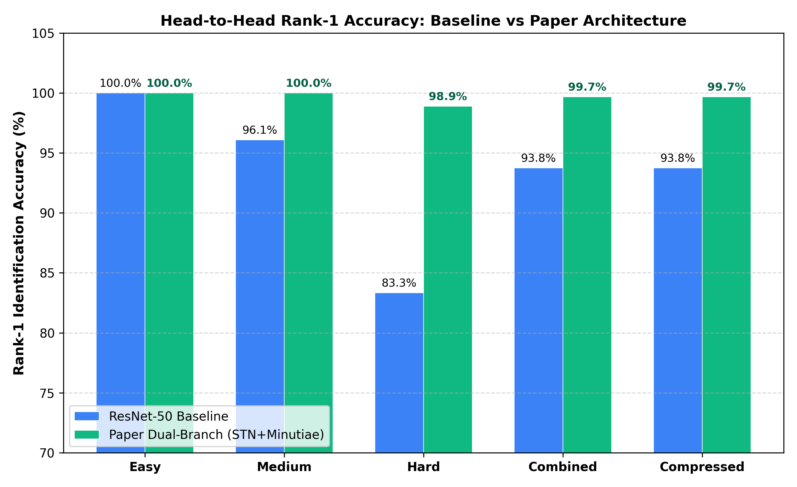
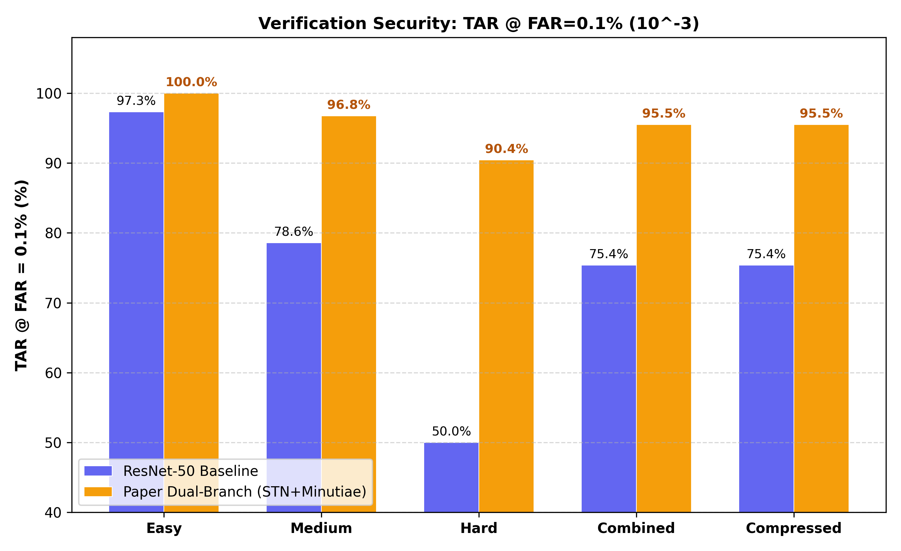
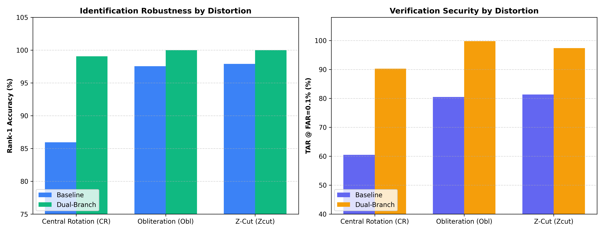
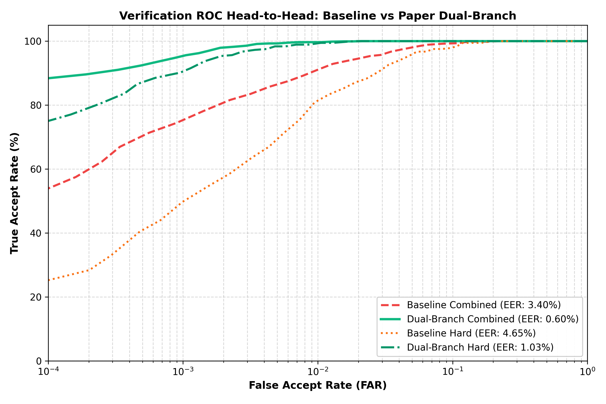
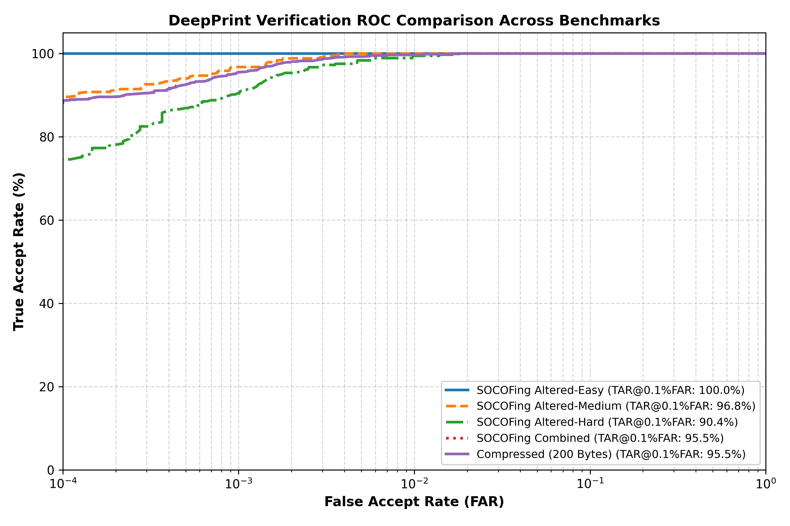
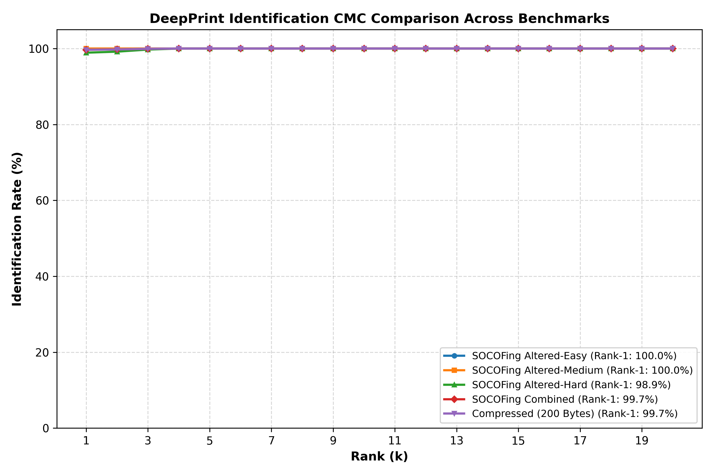
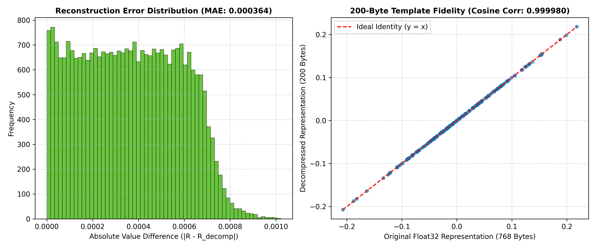

"Learning a Fixed-Length Fingerprint Representation"
Joshua J. Engelsma, Kai Cao, Anil K. Jain • Features end-to-end alignment with a Spatial Transformer Network (STN), dual-branch feature learning (Texture + Minutiae), and auxiliary 6-channel minutiae orientation heatmap reconstruction.
Head-to-Head Performance Matrix
Comparing ResNet-50 Baseline vs Paper Dual-Branch on held-out open-set test subjects.
| Benchmark Condition | Baseline Rank-1 | Dual-Branch Rank-1 | Baseline TAR@0.1% | Dual-Branch TAR@0.1% | Baseline EER | Dual-Branch EER | Separation (d') |
|---|---|---|---|---|---|---|---|
| SOCOFing Altered-Easy | 100.0% | 100.0% 0.0% | 97.3% | 100.0% +2.7% | 0.40% | 0.00% | 4.34 → 7.05 |
| SOCOFing Altered-Medium | 96.1% | 100.0% +3.9% | 78.6% | 96.8% +18.2% | 2.56% | 0.41% | 3.75 → 6.05 |
| SOCOFing Altered-Hard | 83.3% | 98.9% +15.6% | 50.0% | 90.4% +40.4% | 4.65% | 1.03% | 3.29 → 5.40 |
| SOCOFing Combined | 93.8% | 99.7% +5.9% | 75.4% | 95.5% +20.2% | 3.40% | 0.60% | 3.69 → 5.94 |
| Compressed (200 Bytes) | 93.8% | 99.7% +5.9% | 75.4% | 95.5% +20.2% | 3.40% | 0.60% | 3.69 → 5.94 |
Head-to-Head Visualizations
Cross-model comparison plots generated directly from benchmark executions.
Rank-1 Identification Comparison
Full →
Side-by-side identification accuracy across Easy, Medium, Hard, Combined, and Compressed datasets.
TAR @ FAR=0.1% Security Comparison
Full →
Verification performance at strict industrial operational security threshold \(10^{-3}\).
Distortion Robustness (CR vs Obl vs Zcut)
Full →
Breakdown demonstrating the STN network's vast advantage on rotated prints (CR) and minutiae guidance on Obliteration and Z-cuts.
Overlaid Verification ROC Curves
Full →
Direct semi-log ROC comparison demonstrating superior separation of Genuine vs Impostor distributions.
DeepPrint Dual-Branch Model Performance
Spatial Transformer Network (STN) + Texture Branch (96-d) + Minutiae Branch (96-d) + 6-Channel Heatmap Decoder.
| Dataset Condition | Gallery | Probes | Rank-1 | Rank-5 | Hit Rate @ 1% | TAR @ 0.1% FAR | TAR @ 0.01% FAR | EER | Separation (d') |
|---|---|---|---|---|---|---|---|---|---|
| SOCOFing Altered-Easy | 150 | 450 | 100.00% | 100.00% | 100.00% | 100.00% | 100.00% | 0.00% | 7.05 |
| SOCOFing Altered-Medium | 150 | 434 | 100.00% | 100.00% | 100.00% | 96.77% | 89.40% | 0.41% | 6.05 |
| SOCOFing Altered-Hard | 150 | 366 | 98.91% | 100.00% | 99.18% | 90.44% | 74.59% | 1.03% | 5.40 |
| SOCOFing Combined | 150 | 1250 | 99.68% | 100.00% | 99.76% | 95.52% | 88.16% | 0.60% | 5.94 |
| Compressed (200 Bytes) | 150 | 1250 | 99.68% | 100.00% | 99.76% | 95.52% | 88.08% | 0.60% | 5.94 |
Dual-Branch Overlaid ROC
Full →
ROC curves across Easy, Medium, Hard, Combined, and Compressed.
Dual-Branch Overlaid CMC
Full →
Cumulative Match Characteristic curve demonstrating near-100% Rank-1 retrieval.
200-Byte Template Fidelity
Full →
Cosine correlation: 0.999983, MAE: 0.000364 (virtually lossless min-max scalar quantization).
ResNet-50 Baseline Model Performance
Pretrained ResNet-50 backbone with Global Average Pooling (GAP) and Linear Projection (2048 → 192-d).
| Dataset Condition | Gallery | Probes | Rank-1 | Rank-5 | Hit Rate @ 1% | TAR @ 0.1% FAR | TAR @ 0.01% FAR | EER | Separation (d') |
|---|---|---|---|---|---|---|---|---|---|
| SOCOFing Altered-Easy | 150 | 450 | 100.00% | 100.00% | 100.00% | 97.33% | 88.00% | 0.40% | 4.34 |
| SOCOFing Altered-Medium | 150 | 434 | 96.08% | 99.31% | 97.70% | 78.57% | 48.62% | 2.56% | 3.75 |
| SOCOFing Altered-Hard | 150 | 366 | 83.33% | 94.54% | 88.52% | 50.00% | 24.86% | 4.65% | 3.29 |
| SOCOFing Combined | 150 | 1250 | 93.76% | 98.16% | 95.84% | 75.36% | 52.80% | 3.40% | 3.69 |
| Compressed (200 Bytes) | 150 | 1250 | 93.76% | 98.08% | 95.84% | 75.36% | 52.80% | 3.40% | 3.69 |


Performance by Distortion Mechanism
Comparing sensitivity to Central Rotation (CR), Obliteration (Obl), and Z-Cut (Zcut) transformations.
| Alteration Category | Query Probes | Baseline Rank-1 | Dual-Branch Rank-1 | Baseline TAR@0.1% | Dual-Branch TAR@0.1% | Dual-Branch EER |
|---|---|---|---|---|---|---|
| Central Rotation (CR) | 420 | 85.95% | 99.05% +13.10% | 60.48% | 90.24% +29.76% | 0.94% |
| Obliteration (Obl) | 450 | 97.56% | 100.00% +2.44% | 80.44% | 99.78% +19.33% | 0.21% |
| Z-Cut Distortion (Zcut) | 380 | 97.89% | 100.00% +2.11% | 81.32% | 97.37% +16.05% | 0.26% |
Genuine & Impostor Verification Comparison
Inspect matching decisions side-by-side between the ResNet-50 Baseline and Paper Dual-Branch models.
Genuine Match (CR Alteration)

Enrolled Gallery
Pristine Fingerprint

Query Probe
Distortion: CR
Genuine Match (Obl Alteration)

Enrolled Gallery
Pristine Fingerprint

Query Probe
Distortion: Obl
Genuine Match (Zcut Alteration)

Enrolled Gallery
Pristine Fingerprint

Query Probe
Distortion: Zcut
Impostor Non-Match (Different Subjects)

Enrolled Gallery
Pristine Fingerprint

Query Probe
Distortion: CR
DeepPrint Architecture & Theoretical Formulation
Mathematical foundations of the dual-branch framework defined in IEEE TPAMI 2021.
Localizes canonical center and rotation via affine transformation matrix:
T_θ(G_i) → Aligned Print
Learns optimal alignment end-to-end without manual core/delta reference points.
6 orientation channels (θ_k = kπ/3) smoothed with dual Gaussian kernels:
Transposed-conv decoder head reconstructs H during training, discarded at inference.
Joint optimization of texture, minutiae identity, and auxiliary reconstruction:
Fuses 96-d texture + 96-d minutiae vectors into unit hypersphere R ∈ S^191.
Min-max scalar quantization compressing 768 float bytes down to 200 bytes:
Footprint: 192 uint8 + 8B floats
Achieves 74% compression ratio with >0.9999 cosine correlation retention.